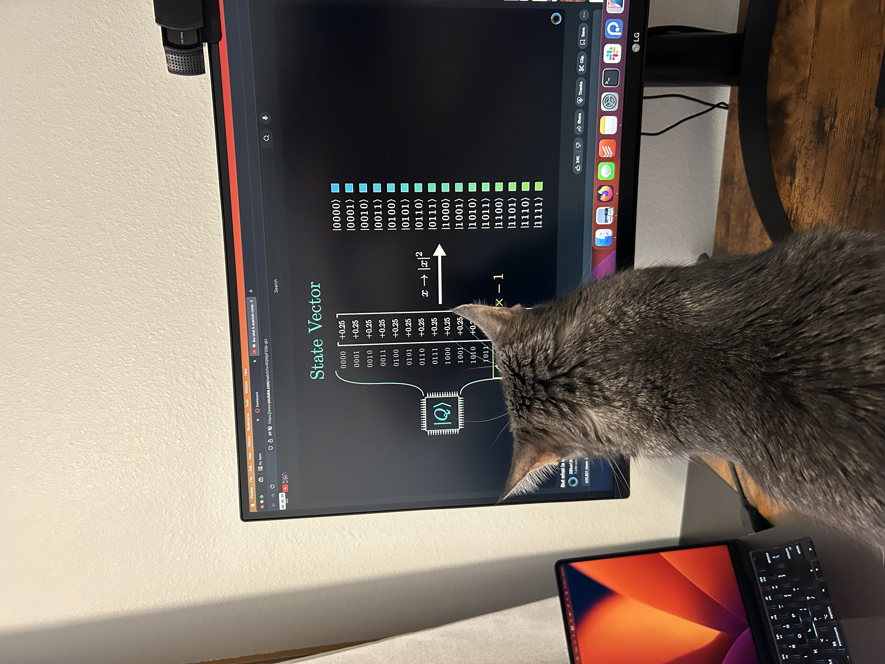
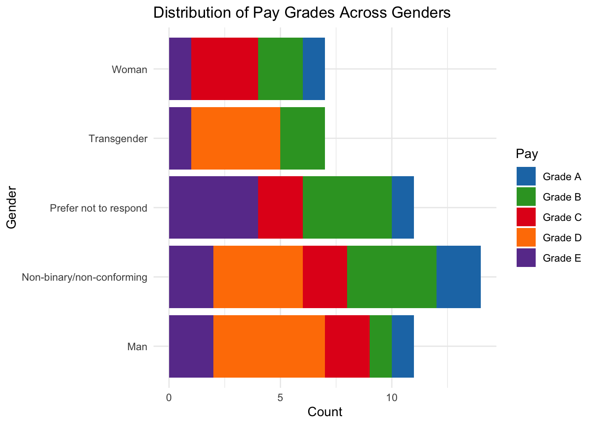

print("I would like for this text to print.")[1] "I would like for this text to print."Harun Celik
May 19, 2025
Welcome to the DSPG Quarto blog. This post will be a demonstration of some of the capabilities of a quarto doc and some basics of dos and don’ts as you’re writing your own blogs throughout the DSPG program.
These blogs are generated using Quarto Markdown (.qmd). Markdown is a special type of text format that is both legible with and without its rendering. Quarto Markdown follows the syntax of basic Markdown and has some additional features for use as well. The Markdown Basics guide on the Quarto page will be a great resource to view how you can format your texts.
Each blog has its own yaml style metadata section at the top of the file. This one has a metadata section that looks something like this in the source code.
---
title: "Blog Writing Guidelines" # The title of your post
author: "Harun Celik" # The author associated with the blog post
date: "2024-05-05" # The date in Year-Month-Day format
categories: [blog tutorial] # The categories associated with the blog
---There are additional options for the yaml that you can check out through the Quarto documentation page.
You can link items in your files by using the following syntax [Text of Link](Link Reference - URL). Referencing also works for adding images into your blogs. The syntax is very similar, but requires an ! in the front. So an example would be 

Since this post doesn’t specify an explicit image in the yaml, the first image in the post will be used as the thumbnail of the post. A couple of things to remember with linking images.
imgs directory. This helps prevent clutter and makes it easier to find the files."image_1.jpg" but instead something like "age_scatterplot_1"._ or use camelCaseNaming. Spaces will prevent the blog from properly rendering!One of the coolest features of the Quarto blogs is the ability to integrate code chunks and have them render. Let’s check out how this works. Here is an example of what a code chunk looks like in the source code.
Using different markdown arguments, we can customize our code chunks to prevent them from running, displaying, or rendering messages. You can check out some of those options through the R Markdown Reference Guide.
Some useful ones are below.
eval=TRUE # If FALSE, knitr will not run the code in the code chunk.
include=TRUE # If FALSE, knitr will run the chunk but not include the chunk in the final document.
echo=TRUE # If FALSE, knitr will not display the code in the code chunk above it’s results in the final document.
message=TRUE # If FALSE, knitr will not display any messages generated by the code.
warning=TRUE # If FALSE, knitr will not display any warning messages generated by the codeMost of the time, you’ll want to run some code that generates a table or a visual of your data. To do this, quarto will need a local reference to your data and that’s why your blogs also come with a directory labelled data\. If you are working within R, it is advisable to use the .RDS format for saving any data you want to use for displaying code. Let’s look at an example.
# Let's create a data frame to use
## Generate pay grades as factors
Grades <- c("Grade A", "Grade B", "Grade C", "Grade D", "Grade E")
Grades_Factor <- factor(Grades, levels = c("Grade A", "Grade B", "Grade C", "Grade D", "Grade E"))
# Create randomized vectors of size 50
Gender <- sample(x = c("Woman", "Man", "Transgender", "Non-binary/non-conforming", "Prefer not to respond"), size=50, replace = TRUE)
ID <- sample(x = 1000:3000, size=50)
Pay <- sample(x = Grades_Factor, size=50, replace=TRUE)
# Create data frame
df <- data.frame(Gender, ID, Pay)In our example here we’ve created the data in our blog environment, but often this will not be the case. We are going to pretend that our data is stored in the data directory. We will first save the data we created.
Now we can load it in as Pay_DF.
Let’s write some code with ggplot2 to create a visual.
library(ggplot2)
pay_colors <- c("Grade A" = "#1f78b4", "Grade B" = "#33a02c", "Grade C" = "#e31a1c", "Grade D" = "#ff7f00", "Grade E" = "#6a3d9a")
ggplot(Pay_DF, aes(x = Gender, fill = Pay)) +
geom_bar() +
labs(x = "Gender", y = "Count", title = "Distribution of Pay Grades Across Genders") +
scale_fill_manual(values = pay_colors) +
theme_minimal() +
coord_flip()
Here are some important things to consider when you’re using data sets in your blogs.
data directory is publicly visible. Don’t share data that is private into your blogs.The last thing we will look at is displaying code for languages other than R. Quarto Markdown files have the ability to change the rendering engine so that other languages can also be used. To run both Python and R, you will have to have the reticulate library installed and configured. When you’ve created a code chunk, you will want to switch the section that is typically in the form of {r} to {python} or whatever other supported language you wish to use.
Here is a Python code block.